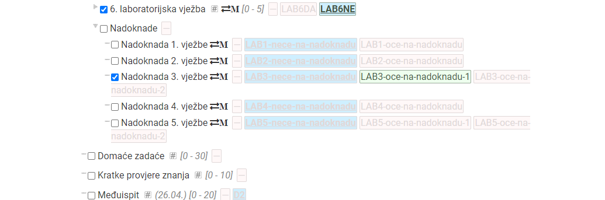
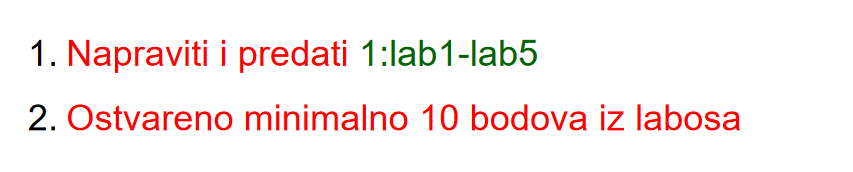

BigZ1 i jesam ja sad to prijavio? 
BigZ1 Intranet -> Nastava -> Zamjena grupa, i tamo odaberi
 Ovo znači da je obavezno napraviti (i obraniti) sve labose i za obranu labosa dobiti barem 10 bodova?
Podvlaka_ da (sve osim šestog)
moze neko napisat koja smo poglavlja iz skripte napravili drugi ciklus ili bar koje je zadnje gradivo rađeno
Kako izgleda usmeni iz OSUR-a?
BigZ1 Na SRSV-u kod Jelenkovića nema zapravo usmenog, nego samo da jednake bodove kao i na završnom. Moguće da će isti princip biti i sada
Kolege kako ste???
BigZ1 previse teksta za moj spori mozak
steker kad dobijem ispit i vidim da je esej od 8k rijeci 💀💀💀💀💀💀💀
Bio sam na nadoknadi za labos i profesor je rekao da za usmeni u cetvrtak pita teoriju i da prodemo kroz pitanja za vjezbu iz skripte. To je za one koji nemaju prolaz s bodovi iz zi x2